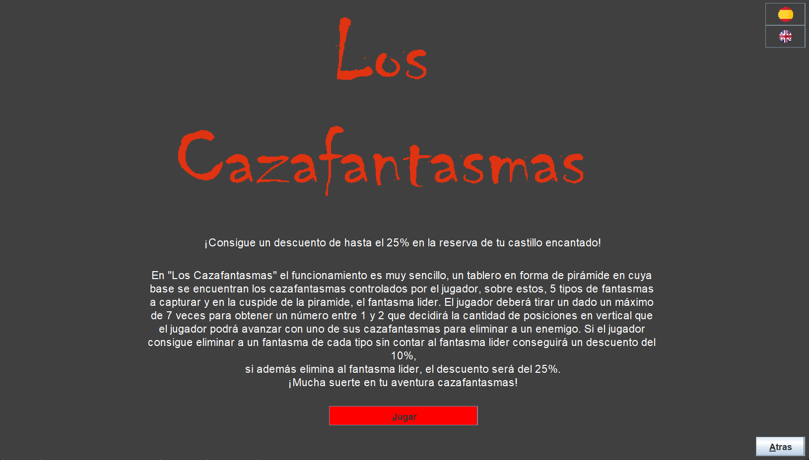
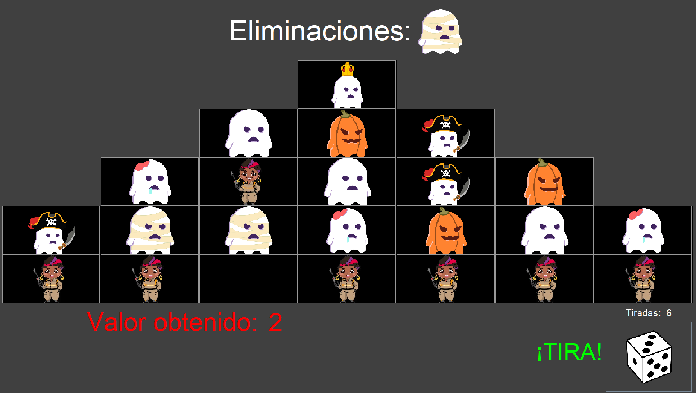
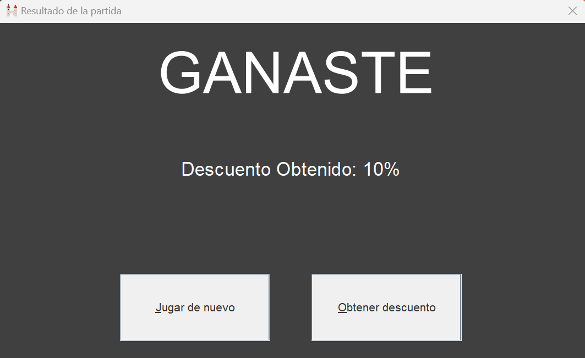

Para jugar a "Los Cazafantasmas", el usuario deberá desplazarse desde el menú de inicio hasta el menú de juego por medio de los botones "Empezar" y "Juega y gana Descuento".
Una vez en el menú del juego, se le informará al usuario de las reglas y el funcionamiento del juego. Una vez leidas y comprendidas, el usuario podrá pulsar en el botón "Jugar" para empezar la partida
Una vez en el juego, el usuario dispone del tablero en forma piramidal en el medio de la pantalla, en la parte inferior derecha se encuentra el dado, con una etiqueta encima que muestra el número de disparos restantes del mismo,y en la parte inferior en el centro, otra etiqueta que muestra el valor obtenido por el dado en la última tirada realizada
Una etiqueta verde directamente a la izquierda del dado, informa de cuando este se encuentra disponible para ser lanzado y obtener un nuevo valor
Una vez lanzado el dado el usuario podrá seleccionar el Cazafantasmas que desea hacer avanzar en vertical el número de posiciones que le indica la etiqueta roja de la parte inferior central.
Una vez realizado el primer movimiento y eliminado el primer enemigo, se le mostrará al usuario una lista en la parte superior en la que se encontrarán aquellos enemigos que han sido eliminados y el orden en el que sucedieron las eliminaciones.
Una vez completado el juego, el usuario será informado del resultado de su partida, así como del descuento obtenido en caso de haber ganado alguno. Se le presentará la opción al usuario de volver a jugar al juego en el botón "Jugar de nuevo"
En caso de haber obtenido descuento el usuario tendrá además la opción de guardar su descuento. Para esto debe pulsar el botón "Obtener descuento" lo que le llevará a una nueva ventana en la que introducir un DNI de alguien mayor de edad para que guarde dicho descuento.
Es importante recalcar que un mismo DNI no se puede usar para guardar varios descuentos simultáneamente Para poder guardar un descuento con un DNI, el DNI no debe haber sido utilizado con anterioridad para guardar un descuento o debe haberse gastado el descuento anteriormente almacenado